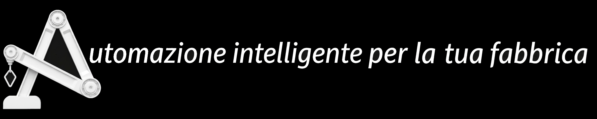

Automatech nasce dall'unione di tecnici specializzati con un’esperienza ventennale nel settore dell’automazione industriale. Siamo un punto di riferimento all'avanguardia per la fornitura e l'integrazione di sistemi di automazione, robotica e supervisione.
Il nostro approccio è completo e "chiavi in mano": seguiamo l'intero ciclo di vita del progetto, dalla definizione iniziale e condivisione con il cliente fino allo startup finale del sistema. Ci occupiamo direttamente di dimensionamento hardware/software, sviluppo di sistemi e software, progettazione di schemi elettrici, installazione e test di qualifica IQ e OQ.
Progettazione e sviluppo di sistemi di automazione basati su hardware PLC per nuove installazioni o revamping completi di impianti industriali.
Implementazione di applicazioni software dedicate alla supervisione dei flussi di lavoro, controllo dati e telecontrollo avanzato d'impianto.
Integrazione e sviluppo software per Robot antropomorfi e isole robotizzate destinate a ottimizzare i cicli di fabbrica complessi.